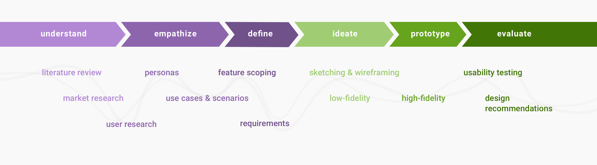
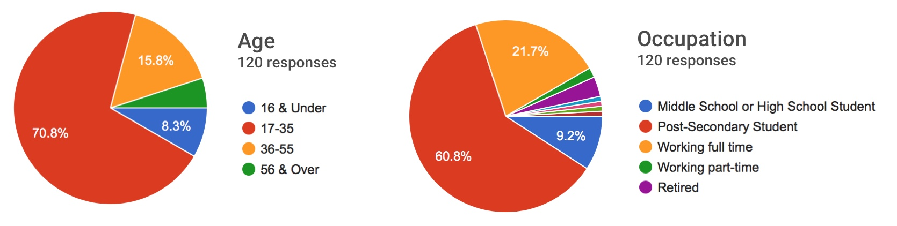

Voluntree is a social volunteering platform that motivates people to volunteer through inter-community challenges, giving users a fun way to track their contributions, support social causes, and share their experiences with friends and family.
THE CHALLENGE
Motivating the individual to volunteer
In a survey done by Statistics Canada (2012), it was found that the greatest barrier to volunteering was lack of time and availability. Instead of trying to remove this rather superficial barrier, however, Voluntree focuses on addressing the deeper-rooted problem: a lack of intrinsic (or self) motivation.
What does this mean? Essentially, the goal of Voluntree is to give people enough motivation that they can eventually overcome superficial barriers--like time, effort, and availability--on their own. Voluntree uses techniques such as gamification and normification to not only capture, but also retain interest in volunteering.
Voluntree attempts to enhance the experience of volunteering by introducing friendly competition amongst whole communities rather than just individuals. This way, the incentive to volunteer is not based on receiving material rewards, but rather the satisfaction of communal achievement. With the theme “social good” in mind, this mobile application aims to promote the idea of giving back to society through collective volunteerism and collaborative effort.
MY ROLE
Design lead
Although I was heavily involved in all stages of the project--from inception to finished product--I took the greatest lead in the design portion of the mobile app. I was responsible for translating our initial sketches into low-fidelity wireframes, developing the high-fidelity prototype, and implementing design changes post-usability test.

THE APPROACH
Design grounded in research and driven by data
Understanding the Science
Before jumping into the solution stage, we did some digging into the problems that communities face with regards to volunteer participation. We looked into the factors that motivate people to volunteer and delved deep into the science behind gamification and normification, two concepts that form the foundation of our mobile application.
We garnered some key insights from a quick literature review:
Younger Canadians, ages 15-34, had one of the highest volunteering rates among age groups but the lowest average annual hours in the same period--suggesting that people are not motivated enough to invest a significant amount of time or make long-term commitments.
Volunteerism can be described using a motivational framework comprised of six functions:
Values--the ability to express selflessness
Understanding--the learning and use of knowledge and skills.
Social Interaction--interaction and engagement with other volunteers.
Career--benefits that may help an individual’s career.
Protection--the protection of ego, by reducing guilt over having socioeconomic advantages over the less fortunate.
Enhancement--the development of personal growth.
While gamification elements (e.g. badges, points, rewards) can increase short-term motivation within individuals, normification (e.g. social pressures) is much more effective at sustaining long-term engagement.
Understanding Our Competitors
Through competitive benchmarking and market research, we were able to scope out what other similar volunteering platforms were offering.
While most of these apps focus on eliminating barriers, Voluntree approaches volunteering from a different angle--looking at what makes people want to volunteer in the first place. The idea was that Voluntree could work alongside these other matchmaking apps rather than compete directly against them.
Understanding Our Users
We put out a questionnaire to gauge the types of users that would be potentially interested in using the app, as well as understand their interests, values and motivations behind volunteering. We received 120 responses with 70% of respondents being between 17-35 years old, and 60% of respondents being post-secondary students.

Key Insights:
The most common sources of motivation for volunteering were 1) to give back to the community, and 2) personal obligation.
More people would volunteer if they 1) had more time, 2) they knew more about available opportunities, and 3) their friends who were also volunteering.
While 98% of participants said they enjoy volunteering, only 25% volunteer more than once a month.
Volunteering is seen as being more important to the community rather than the individual.
Users are generally more motivated to volunteer when part of a smaller, more intimate community.
More users would prefer to contribute to a community ranking rather than an individual ranking on a leaderboard.
Crafting Personas
We identified our users to be mostly students and young working adults, generally between the ages of 15-35, who are technology equipped and interested in volunteering. I created a few personas to represent the different goals and motivations of each user group.
Feature Scoping
Based on the questionnaire we had sent out to users, we were able to do some initial feature scoping and prioritization. Some of the features that users found to be most valuable, in order of importance, included:
Event invites and reminders
Monthly challenges sponsored by companies and organizations
Ability to join a community
Ability to track individual volunteer hours and achievements
Ability to share experiences and opportunities with others
Using this data, as well as taking into consideration our findings from competitive benchmarking, we whittled down the main tasks that would be supported by our app:
Create an account and log in
Explore and join a community
Search for opportunity
Log a contribution
Share/post about experience
Developing Use Cases & Scenarios
For each main functionality within the application, I created a use case to show how users might interact with our system. Each use case was supported by a user scenario and a relevant requirements list. Below is an example of our two main use cases:
From these use cases, we then finalized a set of requirements that would guide us throughout the design phase.
Low Fidelity Sketches & Wireframes
Sketching, sketching...and more sketching! Many individual and group brainstorming sessions later, our team landed on two design alternatives, each of which had their own notable design features.
After discussing the advantages and disadvantages of each, we decided to move forward with the first alternative design. Based on our discussions, I made some quick improvements and turned the initial sketch into a set of low-fidelity wireframes in Axure RP.
High-Fidelity Prototyping
Because of time constraints I went straight to high-fidelity prototyping, using my trusty pair of tools Sketch + InVision.
Usability Testing
With the high-fidelity prototype complete, our next step was to do some usability testing. We used the DECIDE evaluation framework to prepare our usability protocol:
We tested 10 users between the ages of 15-30 from the Greater Toronto Area, all having a variety of volunteering experiences and interests. After a quick background survey, we asked participants to perform the following tasks using our high-fidelity prototype:
Create a new account (sign up).
Log in.
View the first post on your News Feed.
Join the Tree Huggerz community.
View a community challenge.
Log a contribution for that challenge.
View your own profile.
Start a new post about your experience.
Quantitative metrics such as time to complete task and number of errors were used to measure how easily our users could use the app. Because we wanted to focus on content, layout and navigation, micro-interactions were not explicitly tested.
Qualitative feedback was also collected during a debrief with participants shortly after they completed their tasks. At the end, users were also given an exit survey to allow for further questions and feedback about their experience during the testing session.
OUTCOME
Useful, usable, and desirable
A Look at Our Results
Based on the number of errors made per task as well as the average time spent per task, it seemed that users had the most difficulty completing Task 4 (Joining the Tree Huggerz community), followed by Task 5 (Viewing a community challenge).
When asked about this during debrief, participants explained that it was because they couldn’t understand the difference between the “explore” and “communities” pages. It was unclear what content could be found under which tab; users expected to be able to join a community through the “communities” page, though this page was initially intended to show communities that users have already joined. Users also found it difficult to find and access challenges within a community group, as they were located too deep within the navigational hierarchy.
Other than these two points of frustration, most participants stated that they enjoyed the app, that it was aesthetically pleasing, and that they could see themselves using it in real life. Users especially enjoyed the social and gamification aspects of the platform, and thought the concept of communities was well integrated. Many appreciated how the app felt familiar and comfortable to use because of its similarities to other social media apps.
Some notable comments include:
“The layout is quite nice. I like that the first thing I see is my news feed with opportunities. I also like how it integrates with my other social media accounts, like Facebook and Instagram.”
“Having the bottom tab bar made it pretty easy to navigate, but sometimes the label [for a page or button] wasn’t obvious. For example, I expected to be able to search for communities in the communities tab rather than the explore tab. I also didn't realize challenges would be within a specific community--I thought it would be where the leaderboard was.”
“Nice aesthetics. Clear and visible, not cluttered with functions. It’s very pretty and that makes me happy!”
At the end of the usability test, participants were also given a system usability scale (SUS) to complete. The average system usability score across all ten participants was 77--a decent number that puts Voluntree at an above-average SUS ranking.
So while we were confident that users found Voluntree useful, usable and desirable, there was clearly still room for improvement.
Recommendations for the Future
After reviewing the results of our usability test, we were able to categorize the usability issues we came across into three levels of importance: critical, moderate, and minor. To address these issues, I mocked up several design recommendations that could be implemented in future iterations of the product.